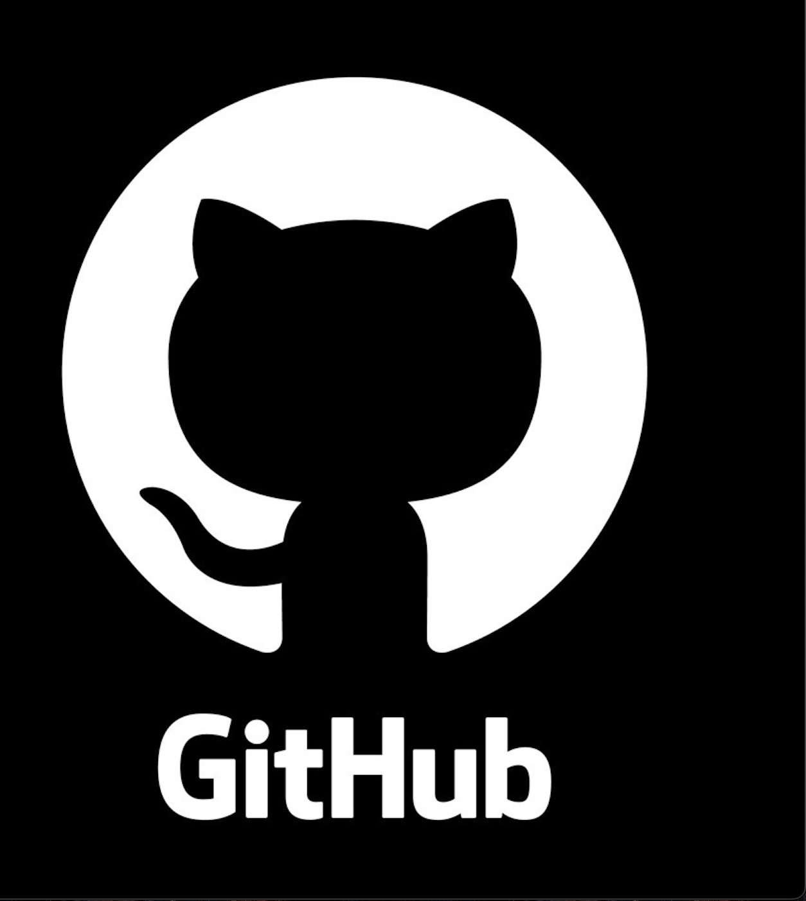

King Fu Website



About me
I started of by using Python to learn the basic of programming including data structures, recursion, modularization and functional programming. Moving forward, I used C and C++ in Unix Environment focuses on fundamental principles of software engineering based on abstract data types and implementations. I also learned algorithm design and analysis, emphasizing on searching, sorting and graph algorithms. Regarding file and database management, I used SQL, relational query languages to learn computer data organization, information processing, entity-relationship model, and relational model. In advanced class, we also learned concurrent execution of transactions, indexing, advanced construct in SQL, and cloud-based database systems. In higher level courses, I learnt Software Process and Product Management (All phases of software are reviewed from a process perspective), Web Applications and Architecture (architecture of modern web-based information systems, web data exchange and serialization and service-oriented middleware), Foundation of Program Analysis (Intermediate representations, inter-procedural and intra-procedural analysis, call graphs, points analysis and analysis frameworks), Search, Knowledge and Simulation (Understand the short and long-term consequences of possible actions and state-of-the-art decision-making algorithms). I learned AI and Games programming (search and problem-solving techniques, knowledge representations, reasoning and acting under uncertainty and machine learning, solving deterministic shortest path, combinatorial optimization problems, constraint satisfaction and multi-agent problems). Last but not the least, I learned Advanced Games Programming and focused on State-of-the AI, graphics for video games and openGL.
Throughout university, I focused on learning skills and also apply them through projects. During both volunteer and projects experiences, I learned communication skills and how to work in a team. Throughout my first work job, it was really fast pace, and I learned how to organize, distribute works to team members and focus on details. I believe all of these helps me for my future, and I am always eager to improve and learn from the surrounding people. It is important to keep a positive attitude of myself and enjoy the time with the people around you.
Experience
- Tim Hortons
Edmonton AB
Supervisor, Trainers, Members, Cashier, Baker - Lead by example and encourage your team to make Guests their highest priority. Share ideas, look for opportunities to grow the business and empower your team to do the right thing
- Put my supportive nature to work. Train, coach and build a strong team with the skills and knowledge they need to excel
- Bring my energy and passion to work every day and help make coming to Tims the best part of someone else’s
- Execute Tim Hortons’ standards around people, product, cleanliness and exceptional customer service while on shift
- Produce the best loved bakery items that guests come to enjoy
- Eyes High Education & Technologies Ltd
Edmonton AB
Tutoring computing science - CMPUT 174 / 175 / 201 / 291
- Helping students with understanding course material both remotely and in person
- Explain course homework, assignments to students
- Guide students through the homework and assignments
- Course resources include Python, C, C++, unix system, SQL
- TeamUp Science at University of Alberta
Edmonton AB
Computing Science workshop TA
- Create computing science workshops for university, high school and junior high students
- Teach students Python who previously had experiences with Python
- Teach intermediate students program Java applications
- Advertising TeamUp Science workshops to high school students
- Volunteer for computing science workshop as a TA to explain Python to high school students
- University of Alberta
Edmonton AB
Interdisciplinary Science Competition Computing Science TA
- Teach students Python who previously had no experience with programming
- Mark exam papers from students
- Harry Ainlay High School
Edmonton AB
Maths Contests team
- Communicate with teachers to organize students for contests.
- Teach students different method to solve problems
- Work out different approaches to one problem with fellow students
Skills
Operating Systems: Microsoft Windows, Mac OS, LINUX, UNIX
Software: (Proficient): Python, C, C++, Java, Linux, SQL, non-procedural programming
(lisp, prolog), Git, HTML, CSS
(Familiar): CSS, REST API, Docker, Docker, Android
Leadership
- Lead Harry Ainlay High School to be the Champion of Team Contests, 2015,
- Champion in Harry Ainlay High School for CEMC Math Contests, 2015
- Champion of Harry Ainlay High School for Fermat Math Contests, 2014
Contact
Edmonton Alberta